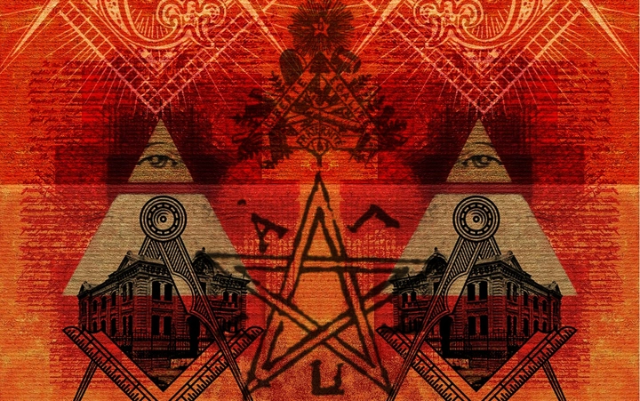
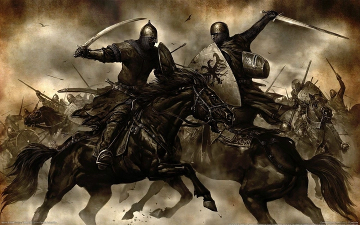
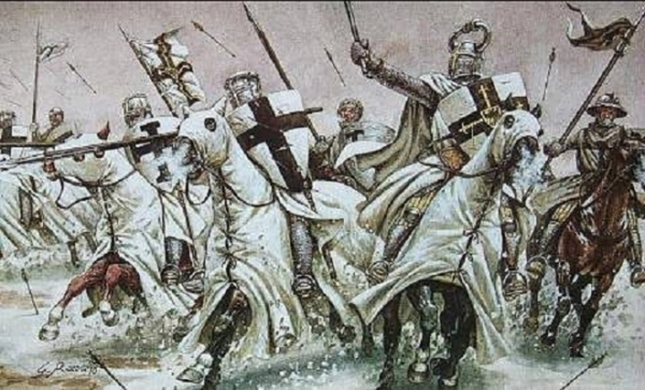

'Đế chế ngầm' bí ẩn trên thế giới: Tồn tại trăm năm
Hiệp sĩ dòng Đền, Freemasons, Bavarian Illuminati, Đầu lâu Xương chéo, và Bilderberg là 5 hội kín bí ẩn và phát triển khá mạnh trong lịch sử từ trước đến nay. Sự thu hút của các hội kín này một phần đến từ sự bí ẩn, một phần đến từ các câu chuyện đi vào huyền thoại về họ.
Nhiều thuyết âm mưu bao vây lấy các hội kín này trong nhiều thế kỷ với những tin đồn về các tổ chức bí ẩn này có gây ảnh hưởng đến các sự kiện lịch sử nổi tiếng của thế giới, từ Cách mạng Pháp thế kỷ 18 đến vụ ám sát Tổng thống thứ 35 của Mỹ John F. Kennedy cách đây hơn 5 thập kỷ.
History Channel (Mỹ) đăng tải những thông tin xoay quanh 5 hội kín này, phần nào giải mã được bí ẩn bao trùm các 'đế chế ngầm' trên thế giới hàng trăm năm qua, mời độc giả theo dõi.
Hôm nay hãy cùng trithucworld.com tìm hiểu 2 trong 5 hội kín nổi tiếng nhất trong lịch sử thế giới nhân loại, đó là Hội Tam Điểm (Freemasons) và Hiệp sĩ dòng kín
Hội Tam Điểm
Thành viên của hội kín Freemasons (Hội Tam Điểm) được cho là có ảnh hưởng rất lớn đến lịch sử nước Mỹ. 13 trong số 39 người ký vào bản Hiến pháp Mỹ năm 1787 là hội viên Freemasons.
Người theo thuyết âm mưu cho rằng, những người sáng lập nước Mỹ như George Washington, James Monroe, Benjamin Franklin, John Hancock và Paul Revere đều tự coi mình là thành viên của hội kín Freemasons.

Được cho là ra đời từ thời Trung Cổ ở châu Âu, những thông tin về hội kín này lần đầu tiên xuất hiện trong tập Regius Poem (Halliwell Manuscript) năm 1390 của Freemasons, dày 64 trang dưới dạng thơ.
Tuy nhiên, Hội Tam Điểm mà chúng ta biết đến ngày nay chính thức ra đời năm 1717 khi 4 hội quán của Hội Tam Điểm ở London (Anh) sáp nhập thành Đại hội quán Anh lần đầu tiên. Freemasons nhanh chóng chiêu mộ hội viên và lan rộng khắp châu Âu đến tận các thuộc địa Mỹ xa xôi.
Đức tin của Hội Tam Điểm
Hội Tam Điểm không phải là một tôn giáo, mặc dù các thành viên của hội được khuyến khích tin theo Đấng Tạo hóa Tối cao (còn gọi là Đấng tạo hóa vĩ đại của vũ trụ).
Đền thờ, nghi lễ và đức tin của Hội Tam Điểm có nhiều nét bất tương đồng với Giáo hội Công giáo. Không chỉ vấp phải sự bài trừ của các Giám mục Công giáo La Mã, Hội Tam Điểm còn bị 1 đảng của nước Mỹ non trẻ phản đối.
Hội Tam Điểm đến nay vẫn còn tồn tại. Hội viên nổi tiếng được cho là của Freemasons bao gồm Mozart, Winston Churchill, Davy Crockett, Franklin D. Roosevelt và John Wayne.
Biểu tượng của Hội Tam Điểm
Biểu tượng dễ nhận biết nhất của Hội Tam Điểm là Góc vuông và La bàn (The Square and Compasses).
Đối diện của góc vuông là một la bàn - công cụ trung tâm trong hình học - mà theo một số chuyên gia tại Học viện Công nghệ Massachusetts, Mỹ - MIT, hai hình này là trung tâm của biểu tượng. Trong đó, chữ G là viết tắt của 'God' - Đấng tạo hóa vĩ đại của vũ trụ, theo quan niệm của hội.
Biểu tượng Thiên nhãn
Việc Hội Tam Điểm lấy hình ảnh Thiên Nhãn là một trong những biểu tượng của hội đã tạo ra sự tranh cãi gay gắt bởi trước đó rất lâu, người Ai Cập cổ đại đã lấy biểu tượng "Mắt của thần Horus" làm thiên nhãn - mắt của Trời.
Thiên Nhãn cũng xuất hiện trong nghệ thuật thời Phục Hưng như một biểu tượng của Kitô giáo, tượng trưng cho sự thấu hiểu con người và thế gian của Thượng đế toàn năng.
Tuy vậy, Cục Dự trữ Liên bang Philadelphia tuyên bố, những hội viên Hội Tam Điểm là Henry Wallace và Franklin D. Roosevelt vẫn chủ ý chọn biểu tượng Thiên Nhãn này như biểu tượng của hội và cho thiết kế vào mặt sau của tờ tiền giấy 1 USD của Mỹ năm 1934.
Trước đó, vào năm 1782, Thiên Nhãn cũng được thiết kế ở mặt sau của Đại ấn Mỹ (con dấu quốc gia). Trên Đại ấn, Thiên Nhãn được vẽ phía trên một kim tự tháp có 13 bậc, tượng trưng cho 13 tiểu bang đầu tiên của nước Mỹ, với ý nghĩa: Thượng đế phù hộ cho một nước Mỹ thịnh vượng.
Hiệp sĩ dòng đền
Hiệp sĩ dòng Đền (vừa là thầy tu, vừa là hiệp sĩ, còn có tên gọi Hiệp sĩ Đền Thánh; hay Các Chiến hữu nghèo của Chúa Kitô & đền Solomon ) là những chiến binh xuất chúng, mang trên mình sứ mệnh bảo vệ những người hành hương Kitô giáo đến Thánh địa Jerusalem (ở Trung Đông) trong các cuộc thập tự chinh.
Năm 1118, Đại thủ lĩnh người Pháp Hugues de Payens (1070-1136) cùng 8 hiệp sĩ khác đã thành lập Hiệp sĩ dòng Đền dưới sự đồng ý của đức vua Jerusalem là Baldwin II.

Lấy 'đầu não' của Hiệp sĩ dòng Đền là Đền Núi ở Jerusalem, các thành viên cam kết sống một cuộc đời khiết tịnh, ngoan đạo, nguyện sống trong cảnh nghèo khó để giữ mình thanh sạch, họ kiêng cờ bạc, rượu chè và thậm chí là chửi thề.
Ở thời kỳ đỉnh cao quyền lực, Hiệp sĩ dòng Đền nắm trong tay mạng lưới ngân hàng lớn mạnh (tiền thân của ngân hàng thời nay), sở hữu các hạm đội tàu lớn và nhiều vàng bạc, châu báu, đất đai (đến từ bổng lộc của vua chúa châu Âu).
Bi kịch kết thúc 2 thế kỷ của Hiệp sĩ dòng đền
Khi các cuộc thập tự chinh kết thúc sau sự sụp đổ của thành Acre (thành Acre của quân Thập Tự rơi vào tay những người Hồi Giáo năm 1291), Hiệp sĩ dòng Đền phải rút về Paris, nơi củng cố lại lực lượng.
Ngày 13/10/1307, Vua Philip IV của Pháp, người từng bị Hiệp sĩ dòng Đền từ chối liên kết với nhà vua, kết án Hiệp sĩ dòng Đền là dị giáo, ra lệnh bắt và tra tấn họ cho đến khi họ đưa ra những lời thú tội giả dối. Vào năm 1309, dưới sự chứng kiến của người dân thành Paris, rất nhiều hiệp sĩ đã bị thiêu sống.
Dưới áp lực từ nhà vua Pháp, Giáo hoàng Clement V buộc phải giải tán Hiệp sĩ dòng Đền năm 1312. Tuy nhiên, vẫn có thông tin cho rằng, một nhóm hiệp sĩ đã trốn thoát thành công và âm thầm hoạt động rải rác khắp châu Âu về sau.
Tin đồn họ giữ các cổ vật linh thiêng vẫn còn đến tận ngày nay. Những cuốn sách và bộ phim nổi tiếng như 'Mật mã Da Vinci' (của nhà văn Mỹ Dan Brown) tiếp tục truyền cảm hứng cho độc giả về sự tồn tại của Hiệp sĩ dòng Đền thời nay.
Biểu tượng của Hiệp sĩ dòng đền
Cross of Lorraine là một cây thánh giá hai mặt là đặc trưng nổi bật trong huy hiệu của Dukes of Lorraine. Sau khi thủ lĩnh Godfrey de Bouillon (1060-1100) trở thành vua của Jerusalem sau cuộc Thập tự chinh đầu tiên (từ 1096 đến 1099), Thánh giá Lorraine trở thành Thánh giá Jerusalem.

Khi các Hiệp sĩ dòng Đền đóng quân tại Đền Núi ở Thánh địa Jerusalem, họ đã chọn Thánh giá Jerusalem làm biểu tượng của họ.
Trong Thế chiến II, Thánh giá Lorraine là biểu tượng của cuộc kháng chiến chống Pháp của Đức Quốc xã. Một số nhà quan sát đã tuyên bố phát hiện Thánh giá Lorraine trong logo của các công ty Mỹ Exxon và Nabisco, thậm chí, biểu tượng này còn được đóng dấu trên bánh quy Oreo.